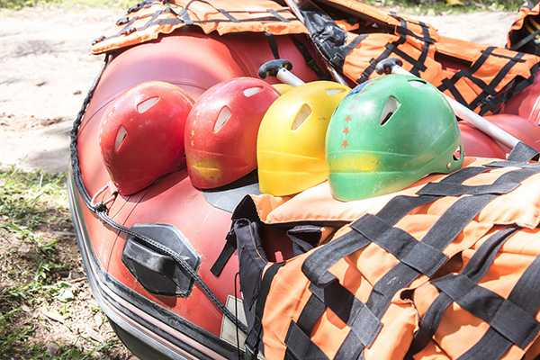

White water rafting began as a bold endeavor to explore untamed rivers and remote landscapes. Its roots trace back to the early 19th century, when explorers and adventurers crafted makeshift rafts from wood and inflated materials to navigate wild rivers in uncharted territories. The first documented white water rafting expedition took place in 1842, led by Lieutenant John Fremont and guide Kit Carson on the Platte River in the United States. Their homemade rubber raft set the stage for what would become a thrilling recreational sport.

By the mid-20th century, white water rafting had evolved from exploration into a sport. The invention of durable inflatable rafts and safety gear made rafting more accessible to outdoor enthusiasts, giving rise to rafting clubs and guided river tours. In the 1970s and 1980s, rafting surged in popularity worldwide. Rivers in Africa, Asia, South America, and Europe opened up to guided rafting tours, and the sport gained recognition on the global stage. Rafting's close cousin, whitewater slalom, made its Olympic debut in 1972, showcasing the sport's skill and athleticism. Though white water rafting itself is not an Olympic sport, its popularity continues to grow as a competitive and recreational activity.